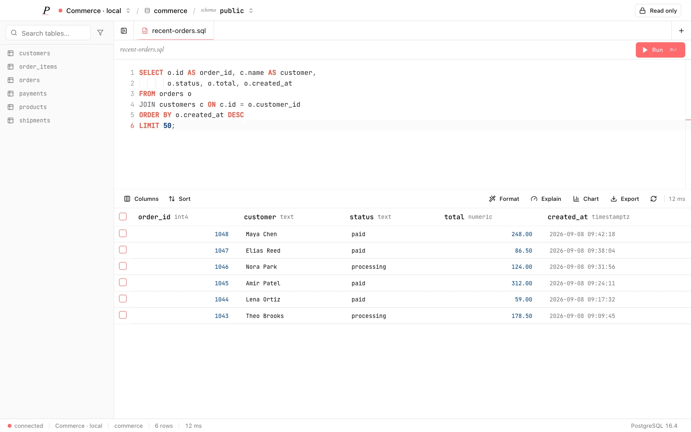

One client.
Three workspaces.
Engine-specific workspaces for Postgres, Redis and OpenSearch in one desktop app. Connections and history stored locally. Saved passwords use OS-backed encryption.
NO WORKSPACE CAPABILITIES
01 POSTGRES SCHEMA-AWARE SQL EDITOR, RESULTS, MULTI-STATEMENT SCRIPTS,
SCHEMA BROWSING, CELL DETAILS, FOREIGN KEYS, EXPLAIN ANALYZE
02 REDIS NAMESPACE KEY BROWSING, TYPED VALUES, TTL, CLI,
MEMORY ANALYSIS, SLOW LOG, PUB/SUB
03 OPENSEARCH DOCUMENT SEARCH, QUERY STRINGS, DSL, FIELDS, MAPPINGS
TOTAL 3 WORKSPACES · 1 DESKTOP APP · APACHE-2.0 SOURCE
NOTE OPTIONAL OPENROUTER AI SENDS PROMPTS TO THE PROVIDER.
MACOS APPLE SILICON / INTEL (UNSIGNED BUILDS)
WINDOWS X64 INSTALLER / PORTABLE
FIG 01 SQL WORKSPACE SqlCanvas + ResultGrid
ACTUAL COMPONENTS, ILLUSTRATIVE DATA
